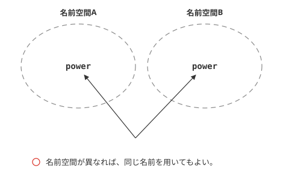
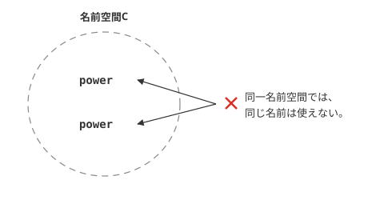
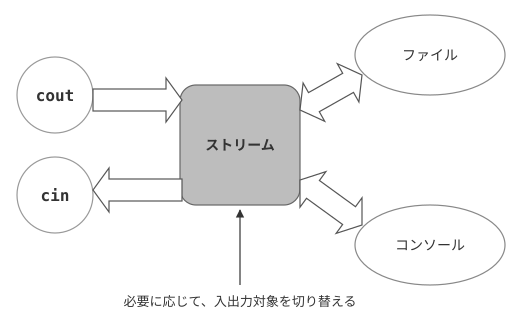

HelloWorld
C++言語版HelloWorld
C言語の入門は、"HelloWorld."の表示から始まりました。C++も、C言語同様、HelloWorldの表示からはじめてみましょう。C++言語は、C言語の機能をそのまま受けつぎ拡張したものなので、C言語と同じくprintf()関数を用いることができます。しかし、ここでは、あえてC++独自の表現方法を用いてプログラムを記述してみましょう。
サンプルプログラム
C++で同様のプログラムを書くと以下のようになります。なお、C++言語のソースファイルの拡張子は、.cppとなっていますので、間違えないようにしてください。
#include <iostream>
using namespace std;
int main(){
cout << "HelloWorld." << endl;
return 0;
}
実行結果からもわかるとおり、このプログラムを実行すると、"HelloWorld."という文字列が表示されます。見てみると、namespace,coutなど見慣れない記述が多いことがわかります。
すでに述べたとおり、C++言語は、あくまでもC言語を拡張したものであることから、printf()関数などを用いてコンソールに文字列を表示することが出来ます。しかし、ここではあえて、C++言語特有の方法で行ってみることにします。
プログラムの仕組み
では、一体、このプログラムはどのような仕組みになっているのでしょうか？ここでは、C言語との違いを中心に見てみましょう。
ヘッダとiostream
1行目に出てくる、#includeは、C言語同様、ヘッダファイルと呼ばれるファイルを読み込むときに用いる宣言です。ここで読み込むファイルは、iostreamというファイルです。これは、ヘッダファイルですが、C++の場合のものであり、C言語の時のように".h"は、必要ありません。そのため、C言語のヘッダファイルと一線を画すため、単にヘッダと呼ばれます。
C言語では、ヘッダファイルを呼び込むことにより、様々な関数を利用できるようになりましたが、C++の場合は、ヘッダを読み込むことにより、クラスを利用できるようになるといった違いがあります。(詳細は後述)
名前空間
3行目のusing namespace std;の部分ですが、using namespaceは、指定された名前の名前空間を使うことを意味しています。詳細は後述しますが、名前空間とは、C言語には存在せず、C++言語から用いられるようになった重要な概念です。
次に出てくる、coutは、ここで定義されているものです。したがって、利用するためには、「標準名前空間を利用する」という宣言としてこの一文が必要になるわけです。
cout
続いて、プログラムの中身に移ります。C++言語では、printf()関数と同じような働きをするものとして、coutが用意されています。
coutは、C言語で用いた関数のようなものではありません。見た目は似ていますが、実はオブジェクトと呼ばれるもので、特に標準入出力の出力をつかさどるものなのです。
C++言語の入出力ストリームでは、>>および、<<を用いることにより、ストリームと呼ばれる対象に対するデータのやりとりを行います。ここでは、coutを通じて、出力ストリームに、文字列"HelloWorld."を送り出しているわけです。
最後のendlは改行を表します。C言語で用いた\nも利用可能ですが、C++で、coutを用いる場合は、こちらが一般的です。
標準名前空間
名前空間とは
ではここで、名前空間とは何か、という概念について説明しましょう。C++言語とC言語の大きな違いのひとつは、C++言語が、あらかじめ大規模開発を意識して作られている言語だという点があります。
大規模開発とは、大勢の人間がひとつのソフト・アプリケーションを開発することで、その場合問題になってくるのが名前の重複です。その場合、ひとつの単語が変数名などとして用いられると、ほかの開発者はそれを利用できなくなり、大変不便です。
そこで、名前空間という概念を用意し、名前空間が違えば、同じ名前を用いてもよい、というルールを作ったわけです。たとえば、ゲームの開発現場で、二人のプログラマーがたまたまpower変数を使用していたとします。
このとき、プログラマーAが、この変数をプレイヤーの力として、プログラマーBがモンスターの力としてこの変数を用いていたならば、プレイヤー、モンスターのそれぞれの名前空間をあらかじめ別々に用意しておけば、こういった問題は発生しません。(図1-1)

図1-1：名前空間の概念①
また、当然ながら同一の名前空間には、同じ名前の存在は許されません。(図1-2)

図1-2：名前空間の概念②
名前空間の利用
名前空間には、ユーザーが独自に定義するものと、もともとC++言語に備わっているものがあります。後者のものを、標準名前空間と呼び、stdと表記します。なお、名前空間を用いる場合は、以下のように行います。
そのため、list1-1の3行目で、C++の標準名前空間が利用されていることがわかります。coutなどは、この標準名前空間で利用可能なのです。また、次のような使い方も可能です。
この方法を用いると、usingを使う必要がありません。なお、この方法を用いてlist1-1を書き換えると、以下のようになります。
#include <iostream>
int main(){
std::cout << "HelloWorld." << std::endl;
return 0;
}
動作結果は同じなので省略します。cout、endl共に標準名前空間に含まれるので、先頭にstdがつきます。
コンソールからの入力
サンプルプログラム
続いて、コンソールから数値を入力し表示するという簡単なサンプルを紹介しましょう。まずは、以下のプログラムを実行してください。
#include <iostream>
using namespace std;
int main(){
int a;
cin >> a;
cout << "a=" << a << endl;
return 0;
}
a=5
cin
実行結果からわかるとおり、キーボードから入力した数値をそのまま出力しています。ここで出てくる、cinも、標準名前空間に含まれるものの一つです。C言語であれば、scanf()関数に相当する処理です。
7行目で、キーボードから数値の入力を受け付けています。値は整数型変数aに代入され、8行目で表示されています。coutでは、連続していくつものものを表示する場合、間を<<ではさみます。そのため8行目では、"a="、変数aの値、改行(endl)の順で出力されるわけです。
このことからわかるとおり、C++においては、C言語のprintf()のように、%dや\nといった記述はほとんど必要ありません。利用することは皆無ではありませんが、C言語に比べればはるかに少なくなっています。
ストリームの概念
最後に、ストリームの概念について説明して終わることにしましょう。ここまで読むと、coutや、cinは、単純に、C言語のprintf()関数や、scanf()関数の代わりと思われるかも知れませんが、実は違います。
これらは、ストリームと呼ばれるものに対し、データ（数値や文字列など）を送り込んだり、逆に受け取ったりするものなのです。ストリームとは、英語で渓流などを表す言葉で、「流れ」という意味で用いられています。
つまり、cinや、coutは、その”流れ”からデータを受け取ったり、送り込んだりするわけです(図1-3)。不等号の向きは、その流れの向きを表すわけです。そして、そのストリームの行き着く先は、今回のサンプルのようなコンソールだったり、ファイルシステムだったりするわけです。これにより、ファイルへの読み書きと、コンソールからの入力・出力の処理がほとんど同じような記述で行うことが出来るのです。

図1-3：ストリームの概念
コンソールの概念自体は、C言語にも存在し、似たようなことも出来ますが、C++の場合は、よりその方法が洗練されているのです。
stringと文字列
string
C++言語では、文字列の操作を行うstringというクラスが存在します。クラスとは何かという説明は後ほど出てくるので、ここでは省略します。ただ、これをcinおよびcoutと合わせて使うと大変便利で、char型の配列を用いて文字列の操作を行っていたC言語に比べれば、大変楽なので、まずはそのことについて解説します。
サンプルプログラム
stringというクラスを用いて作った簡単なサンプルをまずは実行してみてください。
#include <iostream>
#include <string>
using namespace std;
int main(){
string s,t;
t ="入力された文字は、";
cout << "文字列を入力：";
cin >> s;
cout << t+s << "です。" << endl;
return 0;
}
入力された文字は、Helloです。
実行すると「文字列を入力：」と出力され、入力待ち状態になります。ここで、任意の文字列を入力し、Enterを押すと、「入力された文字は、○○です。」と出ます。見てわかるとおり、C言語で同様のプログラムを作るときよりも、数段簡単ですし、cin、coutの記述方法は、intのときとまったく変わりません。これが、C++のストリームを利用する際の魅力のひとつです。
stringと演算子
また、文字列を扱うには、まず2行目のように、ヘッダファイルstringをインクルードする必要があります。これは、C言語のヘッダファイルであるstring.hとは違うので、注意が必要です。値への代入は、8行目のように、=（イコール）演算子を用いて行うことができます。
また、11行目のように、+(プラス）演算子を用いて、文字列同士をつなげることが可能です。このように、C言語とは違い、文字列の操作が簡単にできることがC++言語の特徴です。stringでは、以下の表1-1のように演算子を用いて文字列を操作することが可能です。
| 演算子 | 意味 |
|---|---|
| + | 文字列同士の足し算 |
| += | 文字列同士の足し算（代入演算） |
| == | 比較演算(内容が同等) |
| != | 比較演算(内容が異なる) |
| > | 比較演算(文字列の大きさ) |
| < |
この表を見てもわかるとおり、文字列も、数値などと直感的に近い操作が出来るのが、C++言語の大きな特徴のひとつです。